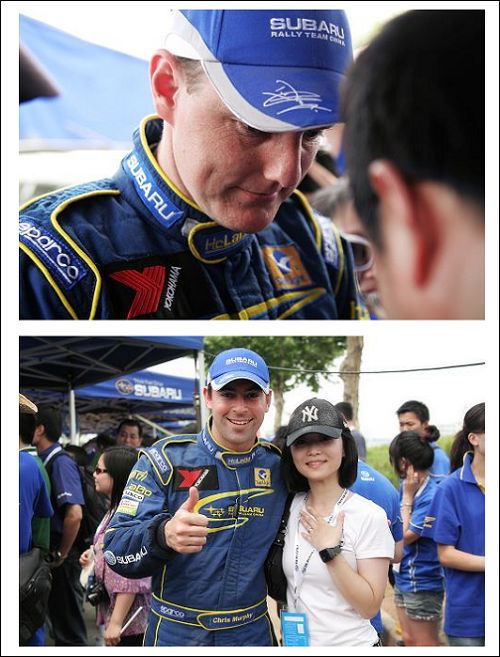
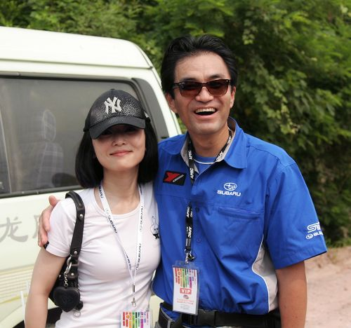
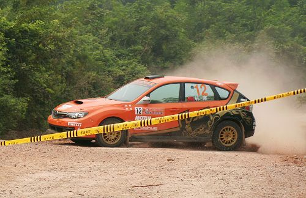
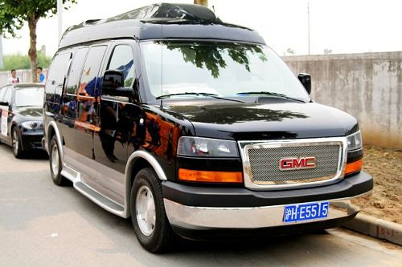
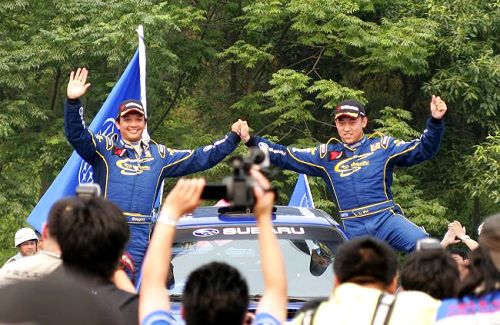
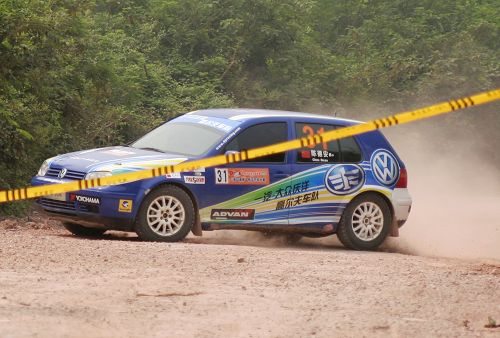

今天混迹在SUBARU组织的CRC观摩团里，周转于不同赛场地点，那感觉就好象被太阳晒蔫、被灰尘掩埋、被酷热蒸发了。。。魔鬼训练营是不是就是这样的？不是组织的问题，是天气的问题。
据说看拉力赛第一次组织这样观摩的，一般都是自己清早起来找个视角好的地儿蹲点看赛车一辆一辆过，至于全程赛况，或许可以听听收音机了解点？用组织的话讲，头一次包大家吃好喝好，转移有车接车送...这种豪华观摩团。可是这种团里VIP用户少，据说南京只有10位。小报记者倒是一大堆，还有记者妈妈带着会走路的孩子一起来的，跟周末一日游似的。中午好吃好喝伺候着，吃完继续外面晒太阳，吃灰尘。要是我们的工作可以这样处理的话，晒点太阳吃点灰尘也可以啊：D
怪不得在SS9赛段观看时，把老农民气得半死，骂骂咧咧地说：“俺们6点就起来等了，你们一来把俺们的视线全给挡喽。。。”再一看人家带着凳子、水瓶、水杯、扇子、遮阳帽，妇女们花枝招展，穿戴整齐的，怪辛苦的。难得在居住地边上举办盛事，犹如给平静的湖面投下一颗小石子。。。。都给SUBARU的观摩团给搅了。
原来看拉力赛比看F1辛苦得多啊，赛车手没几个帅的，帅的那个林志颖一直脱离群众，压根看不到。所以今后看拉力赛坚决不去现场，要在电视机前看。
现场看CRC，等于一大群人集体吃灰。
后悔无数。。。。。。。。。
在SS9赛段合影，身后是沙石路面的赛道。
平时这个路上跑的都是红旋风，就是拉渣土的大卡车。

旁边戴小红帽的小孩是铁杆SUBARU迷，边看边说三菱的坏话。。。
不过能把三菱作为竞争对手，本身就是对三菱的一种承认。
要知道国际组第一名可是贵州百灵的一辆EVO赛车哦~

其实来自澳洲的赛车手这次翻车了，可能当时我们参观修车间时，他们正好在，受到了热捧。低头签名的是车手，合影的是领航员。 他们只有比赛期间才会来中国。

SUBARU亚太区新上任总裁“铃木一成”，替换了原先的大野圭。
大家都在吃灰的时候他也一起在吃灰，而且和我们一样站着晒太阳，不时拿出毛巾来擦汗。。。日本中年男人出门口袋里装着太太准备的手帕，对啊，这位铃木先生掏出的不是手帕，是一条好大的毛巾！换了国内的领导看比赛，准保有人准备好椅子和茶水，坐第一排，没准儿还弄个罩子给挡挡灰尘呢。

短发戴棒球帽就跟剪了辫子的清朝男人没两样，帽檐太低还得抬起脑袋来拍照，这下脸就更大了。

辛苦！都站在土石堆上张望，来一辆赛车欢呼一阵儿。

韩寒开的也是SUBARU的STI 。
获国际组中国车手第三名。

左边是领航员，右边是韩寒，气质老徐与韩寒。。。
还是应了那句俗语：一块馒头搭块糕？

开EVO的林志颖过去了。

猜测这辆GMC是林志颖的保姆车。

李微以1小时14分52秒1的总成绩暂列全场第七、国内车手第三。

李微本站比赛使用了全新的斯巴鲁9代STI，也遭遇到了爆胎。说是撞到了一块石头，轮圈被割裂。

日本车手NONAKA的赛车，右驾。
据介绍这样的车手是自己花钱参加比赛的。
车内进行过改装，能拆的都拆了，里面加了固定的框架，看起来很简陋，但实质上是一匹猛虎。

国家组一汽大众庆洋高尔夫车队陈德安/路明夺冠，该队同时获得车队冠军。

右为赛车手陈德安，这是他首次获得09年揭幕战冠军。

装备齐全。

大牌避震。

井然有序。

维修间的装备。

注意到这只工具箱很摆很酷，做工精致，不知道是不是国产货？

满面憔悴，脸上的斑都晒出来了。前一天晚上两点才睡，找衣服，要找的一件没找到，晕死。大脑兴奋一晚上。早晨6：30就起了...我不憔悴谁憔悴？
才初夏哎，皮肤已经被光照分割成深浅不同的区域了。

12 Responses to “观看CRC南京站比赛”
2009-06-15
我看见韩寒了,哈哈
2009-06-15
没看出来第一张那个拎着横幅的小白人是你，好意外啊～～～
2009-06-15
为什么意外啊？
2009-06-15
肩上挂的哪个小黑包蛮有意思哦。喜欢！哪有卖的，指点一下嘛。我去瞧瞧。每次的穿着，都是出门前精心搭配了一番的哇。都是很搭很协调，细节也注意的很好。赞一个。
2009-06-15
是深棕色的，juicy couture的包包~
http://www.juicycouture.com
2009-06-15
哈哈哈。。。
2009-06-15
still look very white. I like the last photo
2009-06-15
看不见脸上的斑斑的，不用太在意。
啊，我觉得你穿这一身和梅婷的感觉很像。
2009-06-15
小丹佛儿那一串笑。。。笑得人发毛。。。
肯定有话要讲，偏偏不讲，对吧？
鄙视豪华观摩团啊？哈哈哈哈。。。。
2009-06-16
真酷!在观摩团里象你这样的纤纤女生不多吧?
2009-06-16
看了下其他女生基本都是煤体，看赛车的女生的确不多。哦，有追林志颖的小女生，呵呵~
2009-06-16
第四张合影的老外好帅哦~~俊男靓女~~
Leave A Reply
存档只读，评论已关闭。